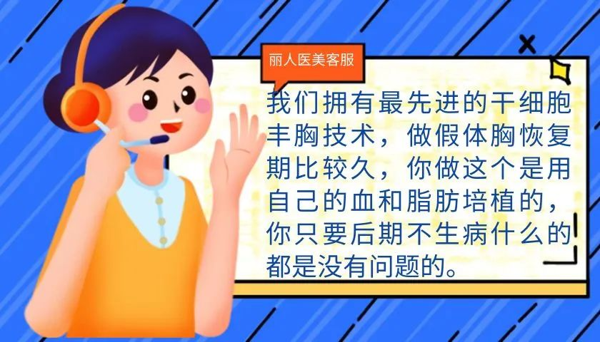
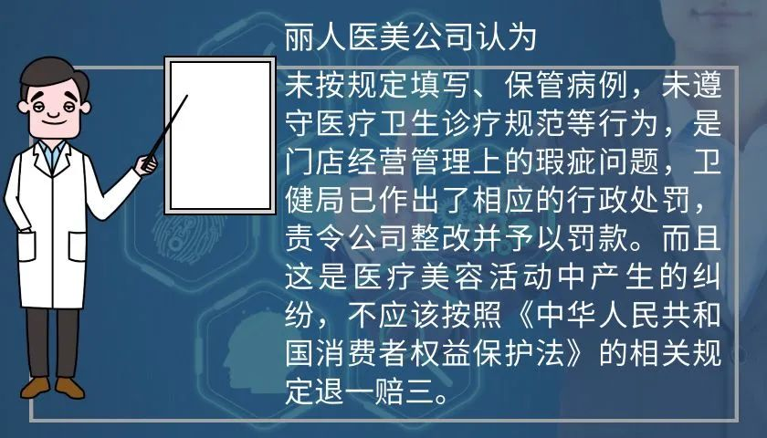
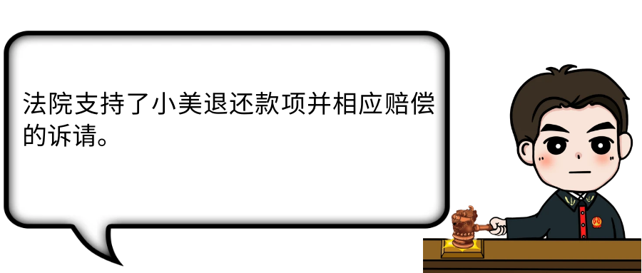

年后肝"负重"？百年春护肝美颜能量抗衰老针——给肝"松绑"，让脸发光！
2026-03-01

About Us
关于百年春
干细胞
号称“人体细胞的生产工厂”，具有强大的修复能力、抗氧化能力等，还可以分化生成具有不同功能的其他细胞。
医美行业也盯上了这种“高科技”：“干细胞注射”“干细胞培植”“干细胞填充”……
网络上各式各样的广告和“科普贴”，让一夜年轻、瞬间变美、改善健康这些难题看起来好像都“触手可及”。
那么，这种“高科技”真的已经普遍应用到医美手术中了吗？注射到你身体里的，真的是你的“干细胞”吗？
小美（化名）经朋友介绍来到丽人医美整形（化名），想要进行隆胸项目。

虽然普通的假体填充手术仅需数万元，但小美在客服的推荐下，还是选择了“干细胞”填充，并支付了45万元手术服务费。
手术后，小美因感觉胸部不适，去丽人医美复查并索要发票时，发现手术项目变成了“自体脂肪结合玻尿酸填充胸部手术”。她要求查看《手术安全核查表》，发现表上记录的手术方式是“细胞胸”。

法院经审理认为，卫健局出具的《行政处罚决定书》，查明丽人医美存在未按规定填写保管病历、伪造病历等行为，结合小美的手术医师承认“细胞胸”就是玻尿酸隆胸，法院认定丽人医美对小美提供医疗美容服务时，在术前宣传的“干细胞隆胸”与实际实施的“自体脂肪结合玻尿酸填充胸部手术”并不一致，系存在欺诈行为。

医美行业近年来迅速发展
各种以“高科技”为噱头的项目
频频涌现
提醒广大爱美的朋友们
仔细辨别“干细胞抗衰老”“干细胞丰胸”等医美广告。“干细胞美容”作为新兴科研领域，还未广泛应用到医美行业中，安全性和可靠性都有待提升。
注意医疗美容机构负责医师是否具有相应资质。在医美行业中，存在大量违规非法行医问题，许多机构打着“外国专家操刀”的旗号，实则大多是由不具备行医资质的人员进行手术，给消费者的人身安全带来巨大风险。
消费过程中应注意存证。对于工作人员就医美项目的宣传介绍及其书面签署的手术同意书等，要及时保留证据备份，尤其是坚决拒绝签署空白文件材料，避免医疗美容机构事后伪造证据，导致消费者举证困难。